How to Resize Objects in the Microsoft Whiteboard App (Windows 11)
This tutorial covers:
How to Resize Objects:
How to Decrease the Size of an Inserted Shape
How to Insert an Unproportional Shape
No time to scroll down? Click through this presentation tutorial:
See a video tutorial:
How to Resize Objects With Mouse
- Step 1: First select an object. Hover the mouse over one corner, or sizing handle, of the object until the cursor becomes a double sided arrow. 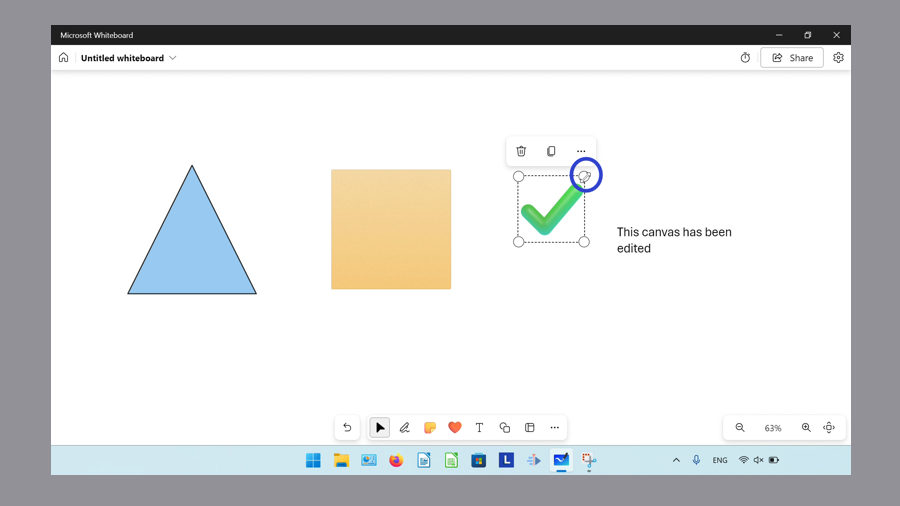
- Step 2: Click and drag outward to increase the size of the object, or click and drag inward to decrease the size of the object. 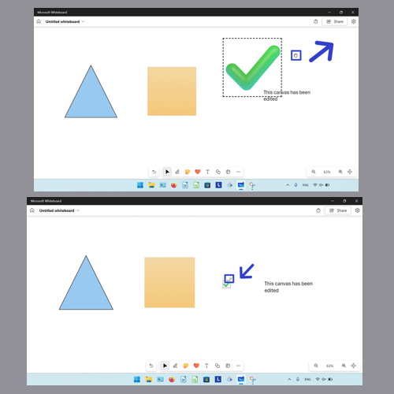
How to Resize Objects With Keyboard
- Step 1: Select an object. On the keyboard hold the Shift key, then press the up arrow key to increase the size of the object. Hold Shift and press the down arrow key to decrease the size of the object. 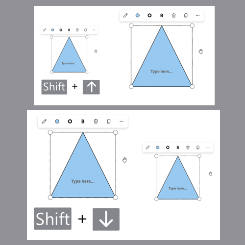
How to Resize Objects Proportionally
- Step 1: First insert a shape. Hover the mouse over one corner, or sizing handle, of the shape until the cursor becomes a double sided arrow. 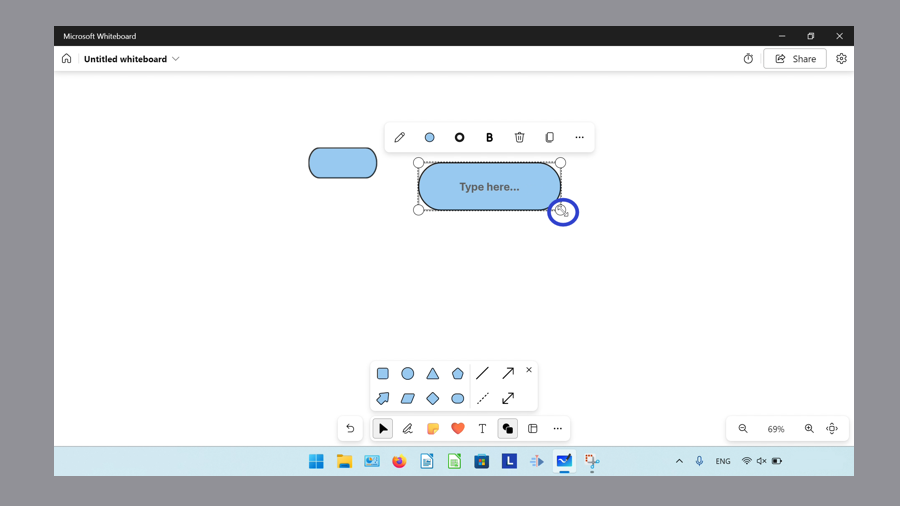
- Step 2: Hold Shift, then click and drag to resize the shape proportionally. 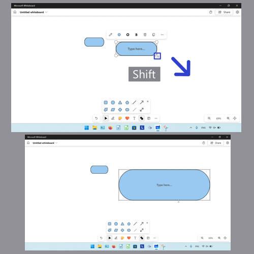
How to Decrease the Size of an Inserted Shape
- Step 1: Open a whiteboard, then click the “Add shape or line” button. 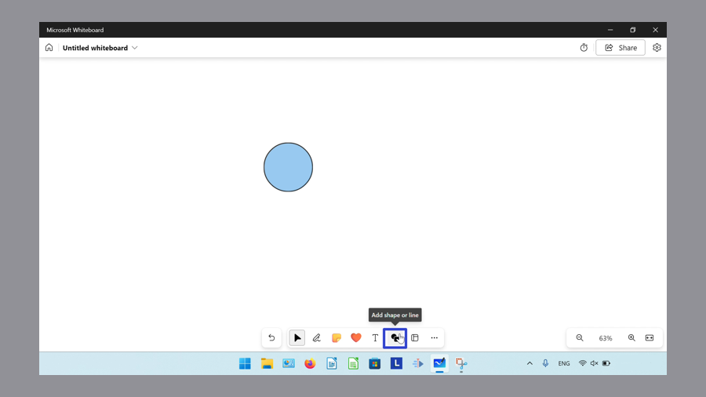
- Step 2: In the menu that opens, click to select a shape. 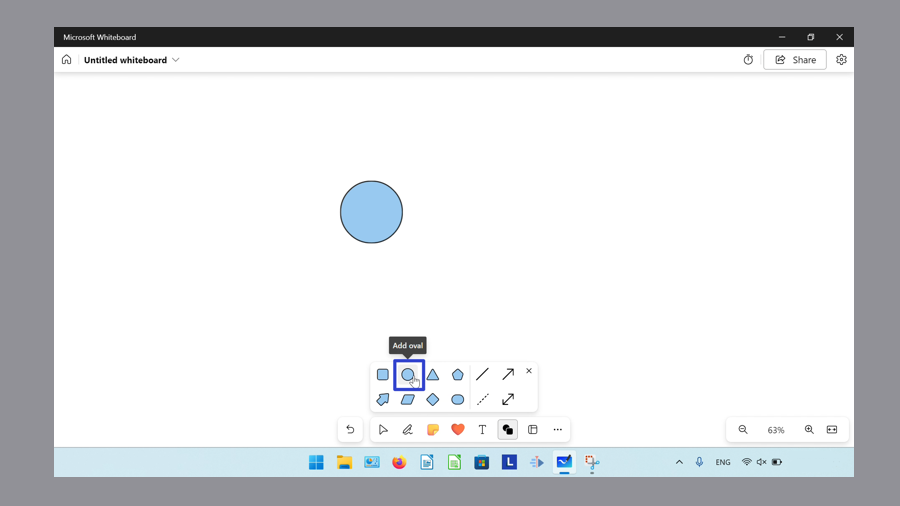
- Step 3: Hold Shift, then click and drag the mouse to insert a shape that is smaller than the default size. 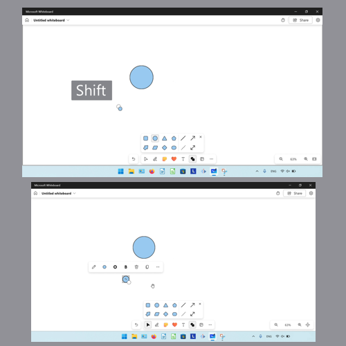
How to Insert an Unproportional Shape
- Step 1: First open a whiteboard, and click the “Add shape or line” button. 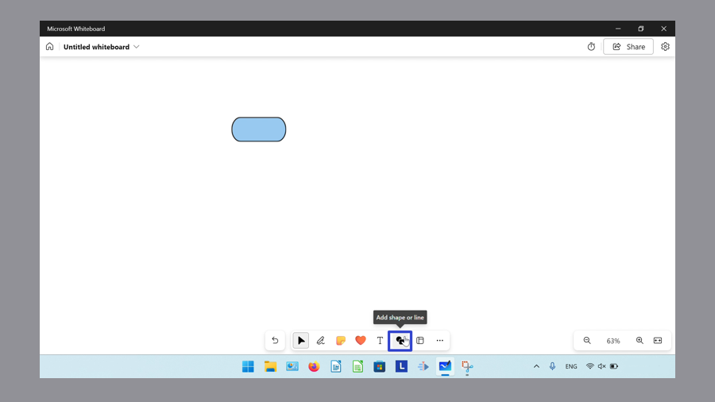
- Step 2: In the menu that opens, click to select a shape. 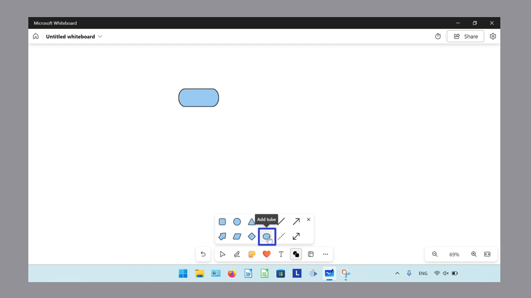
- Step 3: Hold Ctrl, then click and drag to resize the shape while inserting it. 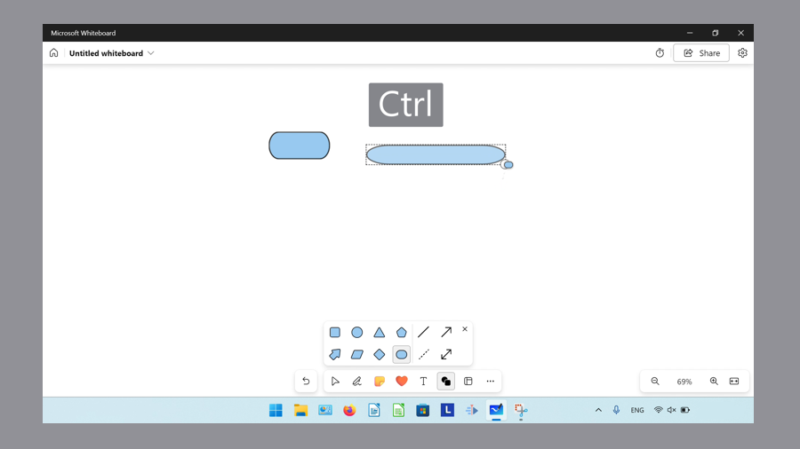
Save these instructions for later with this free PDF tutorial.